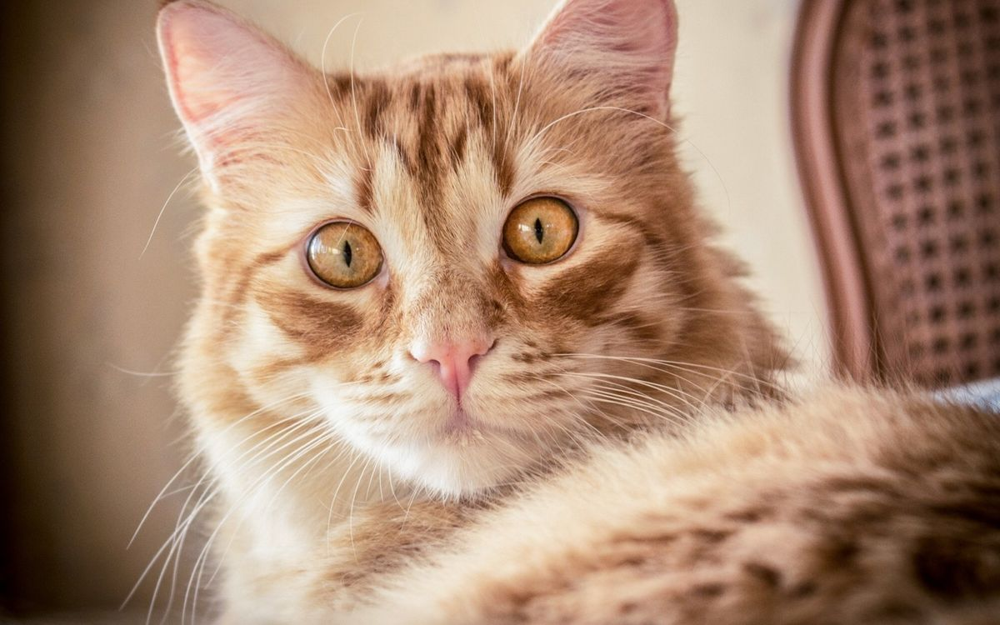

Animals
Animals are categorised into two:
- Domestic Animals
- Wild Animals
Domestic Animals
These are animals that have been tamed and kept by
humans as a work animal, food source, or pet. They include:
- Donkey
- Cat
- Cows
- Sheep
- Dogs
- Goats
Now, let's take a look at some domesticated animals
-
Dogs
Domestic dogs are mostly kept as pets, though many breeds are capable
of surviving on their own, whether it's in a forest or on city
streets.

-
Cats
Domestic cats are characterized by supple low-slung bodies, finely
molded heads, long tails that aid in balance,and specialized teeth and
claws that adapt them admirably to a life of active hunting.

-
Sheep
Sheep or domestic sheep (Ovis aries) are domesticated,
ruminant mammals typically kept as livestock.

Wild Animals
These are mammals, birds, fish, or other creature of a wild nature endowed
with sensation and the power of voluntary motion.Examples
of wild animals are:
- Lions
- Hyena
- Elephant
- Zebra
-
Lions
The lion is a large cat of the genus Panthera. It has a
muscular, broad-chested body, short,rounded head, round ears, and a
hairy tuft at the end of its tail.

-
Hyenas
There are three hyena species — spotted, brown, and striped.
Spotted hyenas are the largest of the three. They are fairly large in
build and have relatively short torsos with lower hindquarters,and
sloping backs. They have excellent night-time vision and
hearing.Hyenas have long forelegs and a powerful neck and shoulders
for dismembering and carrying prey.

-
Cheetah
A cheetah is a large cat and native to Africa and central Iran. It is
the fastest land animal,estimated to be capable of running at 80 to
128 km/h